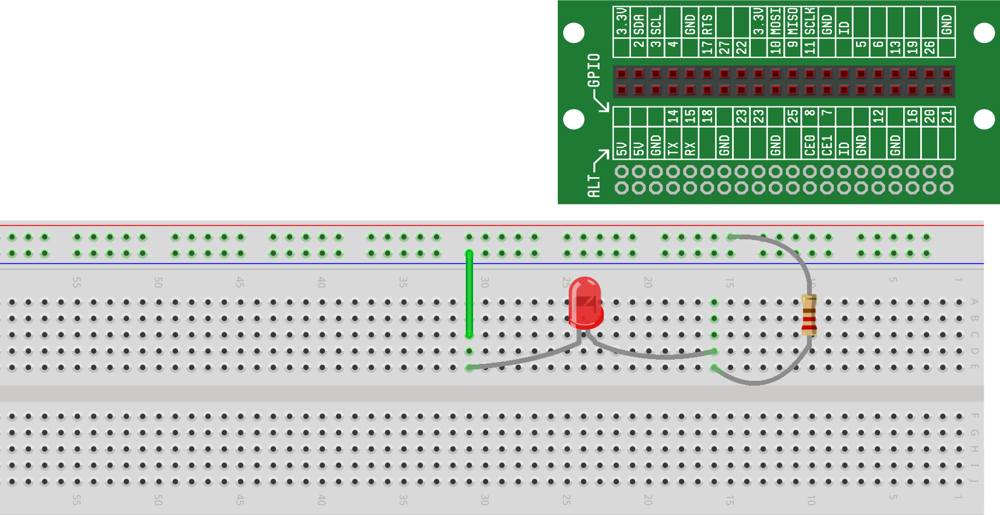
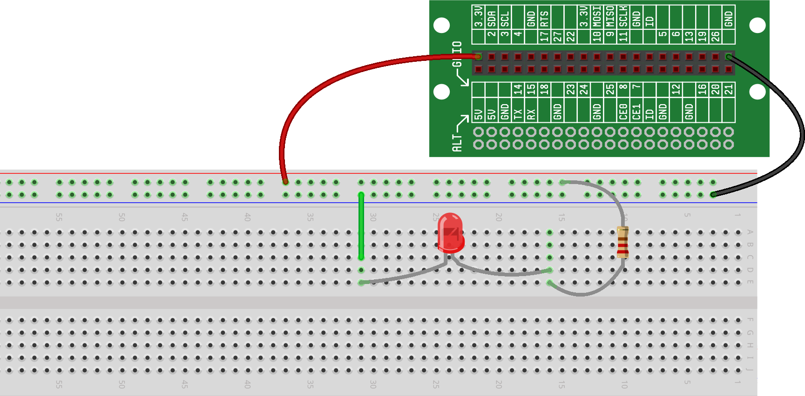

We’ve built our first circuit – both on and off the breadboard – using our 3V battery as our power source. But, there’s no reason we couldn’t power our circuits with another power source instead. For example, some breadboards come with special built-in power supplies so that you don’t have to use a battery or another external power source.
One of the features of the RaspberrySTEM CREATOR Kit is that it can use the power and ground from the Raspberry Pi to power the breadboard. The power is made available to the breadboard through the Lid Connector Board (the green board on the top of the lid - see diagrams below).
In this project, we’re going to replace the 3V battery we’ve been using as our power supply with the internal power provided by the Raspberry Pi. Other than replacing the battery with a different power source, our circuit will remain exactly the same. In fact, our schematic won't change, other than to replace the power source with 3.3V (the voltage of the Raspberry Pi power source) from the 3V provided by the battery.
Here is a reminder of that schematic:

And here are step-by-step instructions for how we make the change to the circuit:
First, we need to disconnect our existing power source. From the breadboard, remove the power and ground wires leading from the battery.
Your breadboard should now look like this:
We can now add power from the connect board to the breadboard. This is accomplished by running a wire from one of the pins labeled “3.3V” on the Lid Connector Board to the red (power) row, thus providing power to the entire row. And then running a wire from the blue (ground) row to one of the pins labeled “GND” on the Lid Connector Board.
At this point, our LED should once again be lit, and here’s what our breadboard should now look like:
We have successfully replaced the battery (our previous power and ground source) with power and ground coming directly from the Raspberry Pi. For all future projects, we'll be using the power/ground from the Raspberry Pi to power our circuits.
Your RaspberrySTEM CREATOR Kit comes with a bag of 65 wires in assorted colors and lengths, as well as a smaller bag of 20 half-inch green wires. All the wires provided in the kit (regardless of color and length) work exactly the same way and are completely interchangeable. While you can use any wire for any purpose, there are some conventions that will help make wiring and troubleshooting your circuits much easier:
You should typically try to use the shortest length of wire possible that will allow you to connect the points you are trying to connect. Doing this will help keep your breadboard from looking like a big mess of wires that are hard to follow and will make accessing your components easier.
Along with the above point, using the small green wires (which sit flush with the breadboard) are typically preferred over the longer wires when you just a short run from one component to another.
While not required, convention is to use red wires to indicate power and black wires to indicate ground. Again, this isn't required, but by doing this, it will be quicker to determine how the key points of your circuit (power and ground) are wired at any given time.
When you start wiring lots of components, your breadboard can get a little messy and it can be difficult to determine where a wire starts and ends. For this reason, we recommend trying to use different color wires within your circuits. This will make troubleshooting much easier.